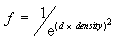

C++ applications can control how fog affects the color of objects in a scene by changing how Microsoft Direct3D computes fog effects over distance. The D3DFOGMODE enumerated type contains members that identify the three fog formulas. All formulas calculate a fog factor as a function of distance, given parameters that your application sets.
This is set with the following D3DFOG_LINEAR equation.
where
Linear and exponential formulas are supported for both pixel fog and vertex fog.
This is set with the following D3DFOG_EXP equation.

where
This is set with the following D3DFOG_EXP2 equation.

where
[!Note]
The system stores the fog factor in the alpha component of the specular color for a vertex. If your application performs its own transformation and lighting, you can insert fog factor values manually, to be applied by the system during rendering.
Â
The following graph shows these formulas, using common values as in the formula parameters.
D3DFOG_LINEAR is 1.0 at start and 0.0 at end. It is not measured relative to the near or far planes.
When Direct3D calculates fog effects, it uses the fog factor from one of the preceding equations in the following blending equation.
This formula effectively scales the color of the current polygon C by the fog factor f, and adds the product to the fog color C, scaled by the bitwise inverse of the fog factor. The resulting color value is a blend of the fog color and the original color, as a factor of distance. The formula applies to all devices supported in Microsoft DirectX 7.0 and later. For the legacy ramp device, the fog factor scales the diffuse and specular color components, clamped to the range of 0.0 and 1.0, inclusive. The fog factor typically starts at 1.0 for the near plane and decreases to 0.0 at the far plane.
Â
Â